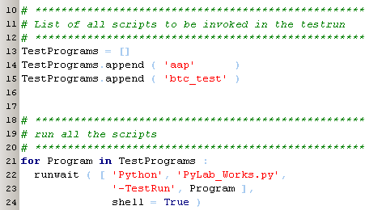
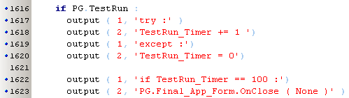

april 2008
Test Suite 
Introduction
The Test-Mode will run a number of application scripts and report output and errors to specific log files. The Test_Mode can be started through menu .... In the future the Test-Mode capabilities could be used to run batch processes, although I don't think that's very attractive for programs relying heavily on GUI.
After starting the Test_Mode (by starting the program with the parameter "-test" or by pressing the menu-item Test), the special program PyLab_Works_Test_Bench is launched and PyLab_Works will close itself. PyLab_Works_Test_Bench will then restart PyLab_Works with each of the specified scripts.
To control the test mode, every application configuration file can contain the special section ....
If this section is omitted, the TestBench will just run the program for a pre-definied number of cycli.
Test commands
Example
Current Test Suite
|
 |
|
Default section |
 |